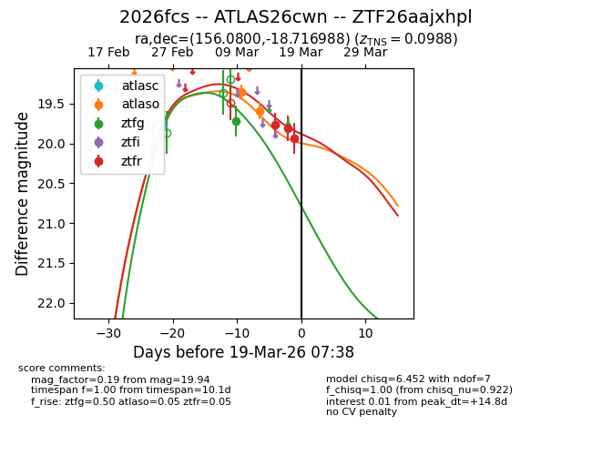
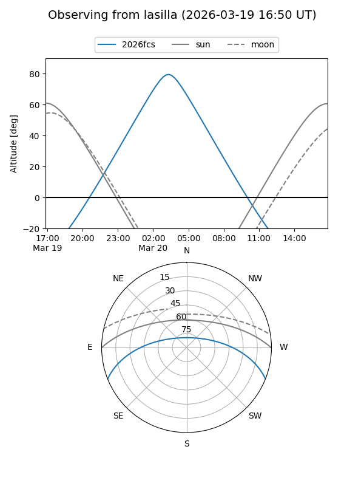
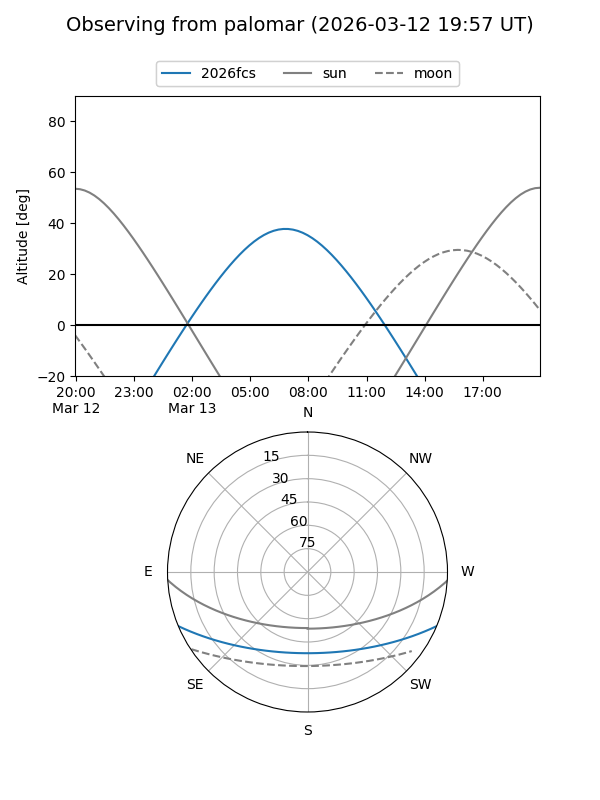
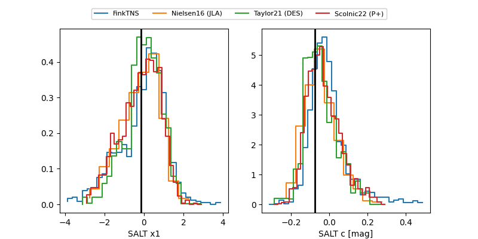

2026fcs
Target 2026fcs at 2026-03-19 07:40
Aliases and brokers:
FINK: link
Lasair: link
ALeRCE: link
TNS: link
YSE: link
alt names
ZTF26aajxhpl (ztf,fink_ztf)
2026fcs (tns,yse)
ATLAS26cwn (atlas)
Coordinates:
equatorial (ra, dec) = 156.0800,-18.71699
equatorial (HMS+DMS) = 10:24:19.20,-18:43:01.16
galactic (l, b) = (261.0086,+31.92522)
Flags:
confirmed ia
Photometry:
last atlaso=19.59, ztfg=19.72, ztfr=19.94
2 atlaso, 1 ztfg, 3 ztfr detections
Lightcurve

Visibility


Additional plots
